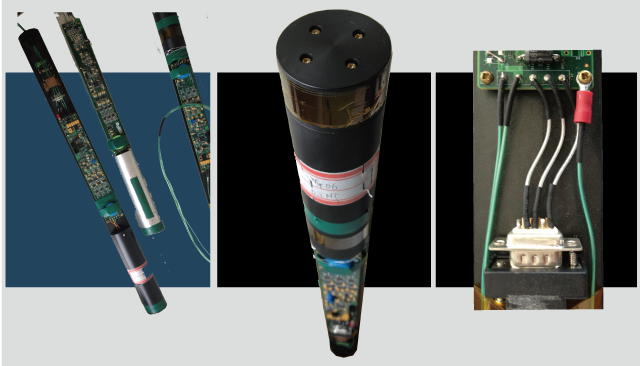

创新专利三端式磁通门传感器
精密手工制作融合现代工艺制程
工业现场关键应用
石油钻井、煤层气采掘、油气管道检测、空运杂散磁检、航磁物探...
麦格韦尔磁电实验室是海事大学旗下从事磁电技术研发、磁电仪器、设备生产的大型实验室，是海事大学为加速科技成果产业化，全校成立的第一家磁电领域的重点实验室。
1000年前，伟大的探险家利用指南针－中国人的磁技术开始了改变了世界的格局的探险；1000年后的今天，麦格韦尔开始了发展自主知识产权，振兴中国人磁电产业的征程。
手机：18601612447 彭老师
13901633386 胡老师
传真：021－51069461
邮箱：jiehu@shmtu.edu.cn
magwell@126.com
地址：上海市海港大道1550号泰山科研楼
邮编：201306
地下定向钻进（Directional Drilling）是利用专门的定向钻机以可控钻孔轨迹的方式，在不同地层和深度进行钻进的一种方法，目前在石油钻井、地质勘探、工业建筑以及地下管线铺设等领域，获得迅速而广泛的应用。定向钻进过程中， 为了能有效地控制钻进轨迹，需要获取钻具方位姿态信息。这些姿态信息包括方位角、顶角和工具面角等，由安装在钻具内的钻井测斜仪器来进行测量，并将测量结果数据传输到地面设备处理。

| 最 新 消 息 |
|---|
 |
| MAGWELL地磁测量装置及梯度仪装备在小型固定翼/旋翼飞机上，进行多种物探、测量作业。 |
| 最 新 消 息 |
|---|
 |
| 2013.07.14,MAGWELL实现百米长距离穿针，跨越旋转磁场导航技术极限 |